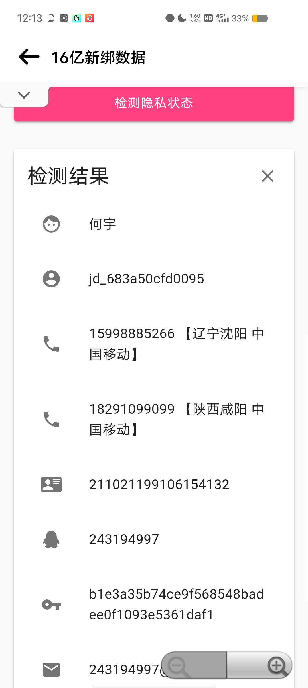

版本:3.2.7 大小:6.5MB
功能最强大/最稳定的社工查询软件
软件截图-左右滑动查看更多



官方介绍
Ghost社工库是一个拥有å„ç§çŸä¿¡æµ‹å‹ 信息泄露检测的社工App。
功能概括
→ Q绑 微博 LOL 小世界 16亿数据库查询
→ 人å£çŒé” 锁机软件生成 sfzçˆ†ç ´ çŸä¿¡è½°ç‚¸
→ 社工思路 照片偷拍 社工打号思路
→ 以及 18🈲功能 人生巅峰
过了这æ‘就没这店ï¼
卡密失效的 → è”系客æœ
带上订单截图→免费补卡密
Copyright © 2023 Ghost社工库&挽æŒ